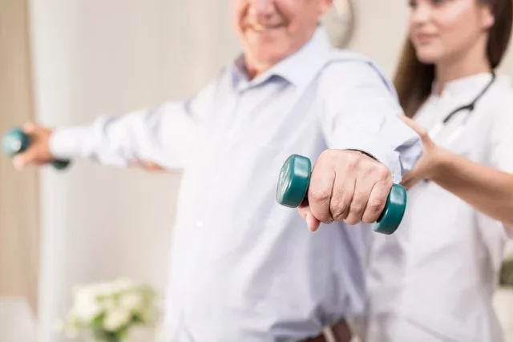

Liberte-se das dores e viva com bem-estar
Agende já a sua consultaFisioterapia no Mal de Parkinson
A fisioterapia exerce um papel fundamental no tratamento de indivíduos com doença de Parkinson. Embora a doença seja degenerativa, a intervenção fisioterápica torna-se de suma importância para amenizar e conduzir o paciente a um quadro de melhora do estado físico, principalmente nas limitações causadas pela rigidez, bradicinesia e comprometimento do equilíbrio causados pela doença.
Visa também prevenir contraturas e deformidades, melhorar a marcha, a coordenação, e prevenir a fraqueza por desuso, além da manutenção da função pulmonar e auto-cuidado. O tratamento iniciado precoce e continuado no decorrer das fases da doença retarda a incapacidade de realizar atividades no dia-a-dia.
Sobre o Mal de Parkinson
É uma doença degenerativa, neurológica, de progressão lenta e sem causa conhecida. Acomete pessoas acima dos 50 anos de ambos os sexos. Seus sintomas principais são: Rigidez muscular, Tremor de repouso, Hipocinesia (diminuição da mobilidade), Déficit de equilíbrio, e Bradicinesia (movimentos lentos).
A marcha fica cada vez mais difícil, com passos pequenos, arrastando os pés, com os braços encolhidos, tronco inclinado e, em casos avançados a pessoa aumenta a velocidade da marcha para não cair (festinação). Outras vezes, pode ficar parado (congelado) com enorme dificuldade para se colocar em movimento.
Agende já a sua consulta